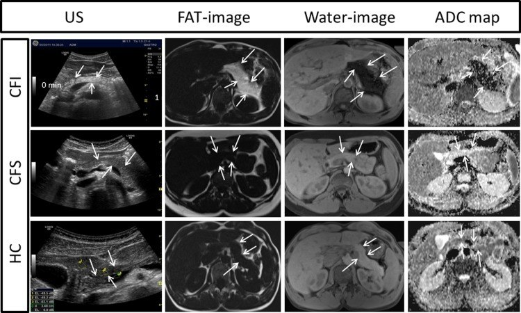

6168 — Suy tụy ngoại tiết ở trẻ: khi nào elastase-1 thấp là THẬT / Exocrine pancreatic insufficiency in children: when is fecal elastase-1 really low?
Tags: pattern:suy-tuy pattern:mo-hoa-tuy pattern:teo-tuy vung:tuy score:elastase-1 protocol:elastase-phan protocol:sieu-am-tuy protocol:MRI-Dixon-tuy incidentaloma:mo-tuy
Mức chắc chắn (certainty): tổng hợp y văn (literature synthesis) — ghép 1 meta-analysis độ chính xác (de la Iglesia và cs., United European Gastroenterol J 2025, PMC12529004, CC BY-NC-ND), 1 scoping review về elastase-1 trong xơ nang (Sankararaman và cs., Pediatr Pulmonol 2026, PMC13142209, CC BY-NC-ND), 1 đoàn hệ nhi viêm tụy INSPPIRE-2 (Gummadi và cs., J Pediatr 2026, PMID 42471081), 1 nghiên cứu giá trị bình thường ở nhũ nhi (PMC8522897, CC BY), 1 nghiên cứu siêu âm–MRI tụy ở xơ nang (Engjom và cs., PLoS One 2018, PMC6062060, CC BY) và 1 nghiên cứu nhi mỡ gan–mỡ tụy (PMC13584307, CC BY-NC-ND). Nhóm không có bệnh nhân của mình; chỗ chưa đủ dữ liệu ghi "chưa rõ".
Câu chốt: elastase-1 phân là xét nghiệm nhạy nhưng KHÔNG đặc hiệu — và độ nhạy phụ thuộc hoàn toàn vào mức độ nặng. Bốn số phải thuộc: (1) ngưỡng < 200 µg/g = suy tụy ngoại tiết (EPI), < 100 µg/g = nặng; gộp 13 nghiên cứu/888 bệnh nhân: Se 0,94 · Sp 0,69 ở ngưỡng 200 (PMC12529004); (2) ở trẻ viêm tụy (n = 1.007, INSPPIRE-2), cùng ngưỡng 200 chỉ đạt Se 65,1% · Sp 75,5%, còn ngưỡng 100 là Se 55,8% · Sp 82,8% — không được lấy độ nhạy của xơ nang áp cho viêm tụy; (3) elastase-1 là enzym NGƯỜI, không có trong chế phẩm tụy heo/bò → PERT KHÔNG làm sai kết quả, không cần ngừng thuốc (khác hẳn chymotrypsin phân); (4) phân lỏng/toàn nước làm pha loãng → thấp giả, và béo phì có mỡ tụy cũng làm elastase thấp hơn mà không phải suy tụy thật.
1. Tổng quan bệnh học – cơ chế hình ảnh
1.1 Vì sao đo elastase-1 trong phân lại phản ánh tụy
- Elastase-1 (CELA3A/CELA3B) do tế bào nang tụy tổng hợp, bài tiết vào tá tràng, không bị phân hủy dọc ruột, và không có ở chế phẩm enzym tụy heo/bò. Hai hệ quả: (a) nồng độ trong phân tỉ lệ với lượng enzym tụy bài tiết; (b) điều trị PERT không phản ứng chéo trong ELISA → kết quả vẫn đọc được khi bệnh nhân đang uống enzym (Dominici & Franzini 2002, PMID 12059069; scoping review PMC13142209).
- Ngưỡng và độ chính xác (người lớn + trẻ, gộp): < 200 µg/g = EPI, < 100 µg/g = EPI nặng. Meta-analysis 13 nghiên cứu/888 bệnh nhân: ở ngưỡng 200 µg/g, Se 0,94 (KTC 95% 0,82–0,98), Sp 0,69 (0,52–0,82), LR+ 3,02, LR− 0,09, DOR 35,27; hạ ngưỡng xuống 100 µg/g thì Sp tăng lên 0,82 nhưng Se giảm còn 0,88 (PMC12529004).
- Vì sao Se cao mà Sp thấp: elastase chỉ giảm khi mất > 90% chức năng nang tụy (ngưỡng gây steatorrhea kinh điển) — nên khi đã giảm thì "chắc chắn có bệnh"; nhưng nhiều nguyên nhân khác (phân loãng, bệnh ruột, mỡ tụy) cũng làm giảm → dương tính giả nhiều. Đây là lý do LR− 0,09 (loại trừ tốt) nhưng LR+ chỉ 3,02 (xác nhận yếu).
- Vì sao EPI nhẹ bị bỏ sót: ở xơ nang, elastase-1 ngưỡng 200 đạt Se 89,3% chung, nhưng 100% ở EPI trung bình–nặng và chỉ 25% ở EPI nhẹ; Sp 96,4% (Walkowiak, dẫn trong PMC13142209). Nghĩa là: elastase bình thường KHÔNG loại trừ EPI nhẹ.
1.2 Vì sao thấp giả: ba cơ chế khác nhau, ba cách xử lý khác nhau
- Pha loãng: elastase đo theo µg/g phân; phân lỏng nhiều nước → cùng lượng enzym nhưng nồng độ thấp. Đây là lý do phải lấy phân thành khuôn, không lấy mẫu nước.
- Giảm tín hiệu nội sinh ("EPI thứ phát"): tổn thương niêm mạc (celiac, Crohn, suy dinh dưỡng nặng, sau nhiễm trùng) và SIBO làm giảm tín hiệu kích thích tụy → elastase thấp dù tụy lành (PMC13142209).
- Mỡ tụy do béo phì: ở 163 trẻ (92 MASLD/71 không), mỡ tụy gặp 93,5% vs 40,8% và elastase thấp (≤ 200 µg/g) gặp 59,8% vs 15,5%; mỗi 1 độ mỡ tụy làm OR 1,97 (1,20–3,23) cho elastase thấp; vòng bụng ≥ bách phân vị 95: OR 3,31 (1,24–8,87); AUC của độ mỡ tụy = 0,76 (PMC13584307). Cơ chế chưa rõ — có thể do thay thế nhu mô hoặc do đề kháng insulin; không được đồng nhất với EPI thật.
1.3 Vật lý hình ảnh: mỡ trong tụy "nói" cùng ngôn ngữ với elastase
- CT: mỡ −40 đến −120 HU, mô tụy bình thường 30–50 HU (cản quang thì cao hơn) → tụy mỡ hóa lan tỏa có đậm độ giảm rõ, gần mỡ dưới da; teo tụy = mất chiều dày, bờ mấp mô.
- MRI: hình Dixon tách nước–mỡ; fat fraction của tụy tăng khi mô nang bị thay bằng mỡ. Ở xơ nang, toàn bộ 10/10 trẻ EPI có lượng mỡ tụy tăng rõ so với nhóm đủ chức năng và trẻ lành, và mỡ tụy tương quan nghịch với ADC (r = −0,93) — mỡ thay nhu mô làm khuếch tán giảm (PMC6062060).
- Siêu âm: tụy tăng hồi âm so với gan (đậm hơn), bờ rõ; nhưng 90% trẻ EPI xơ nang tăng hồi âm, trong khi 27% trẻ xơ nang đủ chức năng và 33% trẻ lành cũng tăng hồi âm → siêu âm một mình không chẩn đoán được EPI, chỉ dùng để phân tầng và tìm bất thường cấu trúc (PMC6062060).
- Hệ quả thực hành: hình ảnh không thay thế xét nghiệm chức năng; nhưng mỡ hóa + teo tụy ở trẻ có steatorrhea là bằng chứng cấu trúc ủng hộ EPI và giúp loại nguyên nhân tắc nghẽn.
2. Mẫu hình + chẩn đoán phân biệt theo vị trí/cơ chế (gamut)
- EPI thật (tụy mất nhu mô): xơ nang (85–90% bệnh nhân; ~80% đã EPI lúc sinh, thêm 20–25% mất dần trong vài năm đầu — PMC13142209); Shwachman–Diamond (suy tủy + loạn sản sụn–xương); viêm tụy mạn/tái diễn (INSPPIRE-2: EPI 19,4%, tích lũy 24% sau 7 năm — PMID 42471081); bất sản/giảm sản tụy bẩm sinh, Johanson–Blizzard; hậu phẫu cắt tụy; sỏi/ống tụy tắc nghẽn.
- Elastase thấp KHÔNG do mất nhu mô: phân lỏng (pha loãng); bệnh ruột non (celiac, Crohn, viêm ruột sau nhiễm, suy dinh dưỡng nặng); SIBO; mỡ tụy/béo phì; mẫu sai cách lấy (phân lỏng, lẫn nước tiểu).
- Steatorrhea không do tụy: bệnh celiac, viêm ruột, suy ruột ngắn, ứ mật (giảm muối mật), bạch mạch ruột, lactose/đường ruột khác — elastase bình thường giúp quay trục chẩn đoán sang ruột.
- Mnemonic nguyên nhân EPI ở trẻ — "CASCADE": Cystic fibrosis, Aplasia/hypoplasia, Shwachman–Diamond, Chronic pancreatitis, Autoimmune/obstructive, Deficiency bẩm sinh enzym đơn thuần (lipase), Endocrine–exocrine (pancreatitis sau tăng calci/mỡ máu).
3. Bảng so sánh phân biệt (ma trận đối chiếu)
| Thực thể (entity) | Hình ảnh điển hình | Chốt vào (rule-in) | Chốt loại (rule-out) | Gợi ý xác nhận |
|---|---|---|---|---|
| Xơ nang (CF) | Tụy mỡ hóa lan tỏa + teo (CT giảm đậm độ, MRI fat fraction cao, US tăng hồi âm); có thể nang/ống giãn | Elastase < 100 µg/g + mồ hôi Cl⁻ ≥ 60 mmol/L + IRT sơ sinh cao/2 đột biến CFTR | Elastase > 500 µg/g + mồ hôi bình thường → ít khả năng EPI do CF (nhưng EPI nhẹ có thể bỏ sót) | Mồ hôi Cl⁻ (làm 2 lần), gen CFTR, elastase lặp lại |
| Shwachman–Diamond | Tụy mỡ hóa sớm, teo, thường không canxi, không giãn ống; xương loạn sản sụn–metaphysis, đầu xương đùi | Giảm 2–3 dòng tủy + elastase thấp + bất thường xương | Tủy bình thường + xương bình thường → nghĩ CF/khác | Công thức máu, X-quang xương, gen SBDS |
| Viêm tụy mạn/tái diễn | Canxi hóa nhu mô, ống giãn không đều, teo, nang giả | Đau tụy tái diễn + canxi/ống giãn + elastase thấp | Canxi đơn độc không ống giãn + không đau → nghĩ di chứng/khác | MRCP, elastase lặp lại, gen PRSS1/SPINK1/CFTR |
| EPI "thứ phát" do bệnh ruột | Tụy bình thường về cấu trúc; niêm mạc ruột teo/viêm | Elastase thấp + bệnh ruột đang hoạt động + hồi phục sau điều trị ruột | Tụy mỡ hóa/teo rõ → nghĩ EPI thật | IgA tTG, nội soi, calprotectin, điều trị thử rồi đo lại |
| Pha loãng do phân lỏng | — (không có hình ảnh) | Mẫu phân nước + elastase thấp + elastase bình thường khi hết tiêu chảy | Phân thành khuôn mà vẫn < 100 µg/g → không phải pha loãng | Lấy lại mẫu phân thành khuôn, 1 lần, không cần 24 giờ |
| Mỡ tụy do béo phì | Tụy tăng hồi âm (độ 0–3), gan nhiễm mỡ; không teo, không canxi | Béo bụng + mỡ gan + elastase thấp nhẹ (100–200) | Teo tụy + steatorrhea nặng → không quy cho mỡ đơn thuần | Giảm cân, đo lại elastase; MRI Dixon nếu cần định lượng mỡ |

Ba hàng: CFI (xơ nang suy tụy), CFS (xơ nang đủ tụy), HC (trẻ lành). Hàng CFI: tụy tăng hồi âm trên siêu âm, rất sáng trên ảnh FAT, giảm tín hiệu trên ảnh nước, và ADC thấp — mỡ đã thay nhu mô. Nguồn: Engjom và cs., PLoS One 2018, PMC6062060, CC BY 4.0. Ảnh nguyên bản.4. Protocol xét nghiệm + chẩn đoán hình ảnh
4.1 Lấy mẫu và đọc elastase-1
- Mẫu: 1 lần, phân thành khuôn (không cần thu 24 giờ); elastase rất bền trong phân (khác chymotrypsin) — có thể gửi xa, bảo quản lạnh.
- KHÔNG cần ngừng PERT (enzym người, không phản ứng chéo). Nếu phòng xét nghiệm yêu cầu ngừng, hỏi lại quy trình — ngừng thuốc không cải thiện giá trị chẩn đoán mà chỉ làm trẻ thiếu enzym.
- Đọc: < 100 µg/g = EPI nặng**; **100–200 = EPI** (nên lặp); **200–500 = vùng xám** — không loại trừ EPI nhẹ/trung bình, và **có thể giảm liều PERT từ từ** (không ngừng đột ngột) nếu lâm sàng cho phép (PMC13142209); **> 500 = bình thường.
- Trẻ nhỏ: giá trị bình thường 200–1.695 µg/g ở 160 trẻ 1–24 tháng; không trẻ nào < 200; nhóm 1–3 tháng thấp hơn nhóm 13–24 tháng (trung vị 790 vs 900 µg/g, p = 0,023) nhưng ngưỡng 200 vẫn dùng được (PMC8522897).
4.2 Xác nhận và tìm nguyên nhân
- Vàng chuẩn chức năng: hệ số hấp thu mỡ (CFA) trên cân mỡ phân 72 giờ (hoặc test secretin/secretin–CCK khi có điều kiện) — elastase chỉ là sàng lọc.
- Xơ nang: mồ hôi Cl⁻ ≥ 60 mmol/L = chẩn đoán; 30–59 = trung gian (làm lại + gen); < 30 = bình thường (ngưỡng chuẩn thực hành, không trích từ bài OA của lượt này). Sàng lọc sơ sinh bằng IRT.
- Hình ảnh (thứ tự ở trẻ): siêu âm (rẻ, không bức xạ: hồi âm, kích thước, ống, canxi) → MRI/MRCP + Dixon (mỡ–nước, ống tụy, nang) → CT chỉ khi cần canxi hóa/giải phẫu trước mổ (ALARA).
- PERT: khởi đầu 500–2.500 UI lipase/kg/bữa, tổng ≤ 10.000 UI/kg/ngày; theo dõi cân nặng, chiều cao, vitamin A/E/D/K, steatorrhea — đáp ứng lâm sàng mới là tiêu chuẩn điều trị, không phải con số elastase.
flowchart TD
A[Trẻ chậm lớn / phân mỡ / nghi suy tụy] --> B[Elastase-1 phân trên mẫu THÀNH KHUÔN]
B --> C{Kết quả}
C -->|< 100 µg/g| D[EPI chắc: tìm nguyên nhân<br/>mồ hôi Cl-, gen CFTR, US/MRI tụy]
C -->|100-200 µg/g| E[Lặp lại mẫu + loại pha loãng/bệnh ruột]
C -->|200-500 µg/g| F[Vùng xám: không loại trừ EPI nhẹ<br/>MRI Dixon, CFA 72 giờ]
C -->|> 500 µg/g| G[Ít khả năng EPI: chuyển trục sang RUỘT<br/>celiac, viêm ruột, SIBO]
E --> H{Còn thấp?}
H -->|Có| D
H -->|Không| G
D --> I[PERT 500-2500 UI lipase/kg/bữa<br/>theo dõi nhân trắc + vitamin tan mỡ]
5. Biến thể bình thường và cạm bẫy
- "Elastase thấp = suy tụy" là kết luận vội: Sp chỉ 0,69 ở ngưỡng 200 (PMC12529004); ở trẻ viêm tụy, Se chỉ 65,1% (PMID 42471081) — cả hai chiều đều sai được.
- Không ngừng PERT để xét nghiệm: elastase-1 người không có trong viên enzym heo/bò (PMID 12059069). Ngừng thuốc chỉ làm trẻ steatorrhea nặng hơn, không làm kết quả "đúng hơn". (Khác với chymotrypsin phân — xét nghiệm này bị ảnh hưởng bởi PERT.)
- Phân lỏng: mẫu nước → thấp giả; phải lấy phân thành khuôn, và đo lại sau khi hết tiêu chảy trước khi dán nhãn suy tụy suốt đời.
- Trẻ béo phì: mỡ tụy làm elastase thấp (59,8% ở MASLD vs 15,5% — PMC13584307) nhưng không kèm teo tụy trên hình ảnh → đừng mở PERT dài hạn chỉ vì một con số.
- Siêu âm tăng hồi âm không đồng nghĩa EPI: 33% trẻ lành cũng tăng hồi âm (PMC6062060) — hình ảnh phải đọc cùng elastase và lâm sàng.
- CFTR modulator làm elastase tăng lại: một số bệnh nhân xơ nang được xếp lại từ EPI sang đủ tụy sau điều trị modulator → không coi EPI là vĩnh viễn, phải đánh giá lại trước khi tiếp tục PERT liều cao suốt đời (PMC13142209).
6. Tự lượng giá — Blind Quiz
Ca 1 — Bé 4 tuổi, chậm lớn, phân mỡ. Siêu âm bụng rồi MRI tụy (hàng giữa và dưới là 2 trẻ khác để đối chiếu).
- Hỏi: hàng nào là tụy mỡ hóa nặng? Dấu hiệu nào trên MRI khẳng định đó là mỡ chứ không phải xơ? Siêu âm một mình có đủ không?
Bấm để hiện đáp án (findings + chẩn đoán)
- Hàng trên (CFI): siêu âm tụy tăng hồi âm rõ (mũi tên), ảnh FAT rất sáng, ảnh nước tối, ADC thấp → mỡ thay nhu mô, tương ứng suy tụy ngoại tiết.
- Hàng giữa (CFS) và dưới (HC): tụy ít sáng trên ảnh FAT, ADC cao hơn — mô tụy còn nhu mô.
- Khẳng định mỡ: chỉ Dixon fat image/fat fraction mới định lượng được; xơ sẽ không sáng trên ảnh FAT và có thể giảm tín hiệu cả T1 lẫn T2.
- Siêu âm không đủ: 90% trẻ EPI tăng hồi âm, nhưng 27% trẻ xơ nang đủ tụy và 33% trẻ lành cũng tăng hồi âm (PMC6062060).
- Nguồn ảnh: Engjom T và cs., PLoS One 2018;13(7):e0201019, PMC6062060 Fig. 2, CC BY 4.0. Ảnh nguyên bản.
Ca 2 — Bốn trẻ cùng "elastase thấp". Ai thật sự suy tụy?
- A. Bé 2 tuổi xơ nang, elastase < 50 µg/g, mồ hôi Cl⁻ 98 mmol/L, tụy mỡ hóa toàn bộ trên MRI.
- B. Bé 9 tuổi tiêu chảy 5 ngày, mẫu phân toàn nước, elastase 140 µg/g.
- C. Bé 12 tuổi béo bụng, gan nhiễm mỡ, elastase 180 µg/g, tụy không teo, không canxi.
- D. Bé 7 tuổi celiac chưa điều trị, elastase 160 µg/g, tụy bình thường; sau 6 tháng ăn không gluten, elastase > 500 µg/g.
Bấm để hiện đáp án
- A = EPI thật (xơ nang): elastase < 100 + mồ hôi ≥ 60 mmol/L + mỡ tụy lan tỏa. Điều trị PERT + theo dõi vitamin tan mỡ.
- B = thấp giả do pha loãng: mẫu nước làm nồng độ giảm; phải lấy phân thành khuôn và đo lại.
- C = mỡ tụy do béo phì: elastase thấp nhẹ nhưng không teo tụy; OR 1,97 mỗi độ mỡ tụy (PMC13584307) — không mở PERT dài hạn khi chưa có steatorrhea/CFA bất thường.
- D = "EPI thứ phát" do bệnh ruột: elastase hồi phục sau điều trị celiac → tụy lành; đây là lý do phải đo lại sau điều trị trước khi kết luận.
- Chốt: elastase-1 là test sàng lọc, không phải chẩn đoán; ngưỡng 200 có Se 0,94/Sp 0,69 (PMC12529004) — nghĩa là loại trừ tốt hơn xác nhận.
Bài liên quan chéo
- 6152 – Viêm tụy mạn ở trẻ: vôi hóa – giãn ống – teo nhu mô
- 6146 – Sỏi túi mật và sỏi ống mật chủ ở trẻ
- 163 – Pylephlebitis & huyết khối tĩnh mạch mạc treo
- 600 – Tổng quan Hệ Nhi khoa
Không dùng để chẩn đoán độc lập khi chưa có người hướng dẫn.